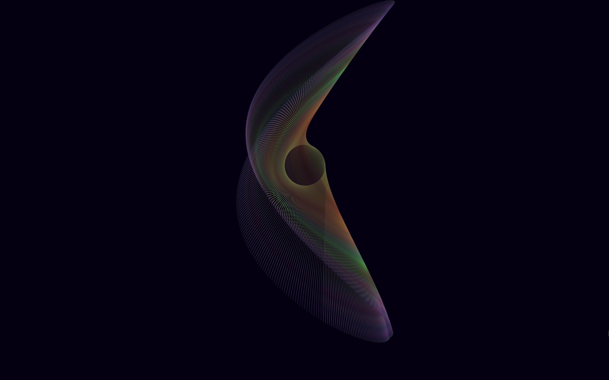
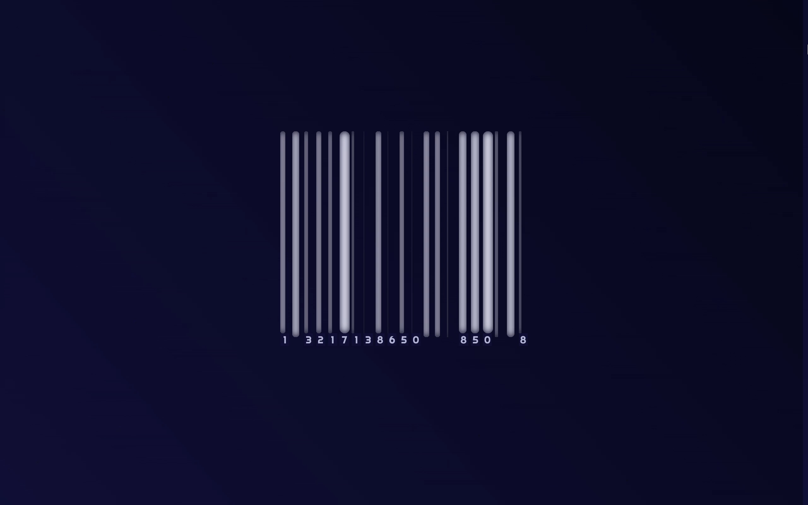

.codex is a current study on modifying organic motions and patterns with research, news, visual trends and sound data from contemporary life
.codex

Fundamentals (clip)
The only audioreactive aspect of this piece is the modification of the natural path of the item's scaling from the center by the amplitude of the podcast tied to it. The audio is an excerpt from Ezra Klein’s conversation with Suzanne Mettler on how we’ve arrived at a moment when all four kinds of threats that drive political crises are simultaneously present for the first time. The neon growth is a symbolization of the odd cancer that we have developed as a society, and its shaky path the deviation that we take from our foundations.

Serial
View audiovisualSerial updates the quotidian barcode to current visual trends used in product design: rounded corners, inner shadows, geometric fonts. The coded animation randomizes each number displayed at any given time between 1-9, suggesting infinite permutations. Serial presents a glossy visage of serial consumption and its projections of desirability and modernity.

Ribbons
View audiovisualRibbons is generated solely out of recursing lines and curved lines, the most primitive and elementary shapes that create our world. Its path is rooted in the gosper curve, but its path is modified by the audio's amplitude.

Snoflae
View motion graphicSnoflae was one of the first iterations in a set of gosper curve / turtle tessellation inquiries. The original combination typically creates what we identify to be a snowflake pattern. However, this version rounds what are typically hard angles and modifies the recursions to create a softer pattern with connotations of a signature used in ink seals. The colors were chosen to reflect the heritage/identity of East Asian descendants.